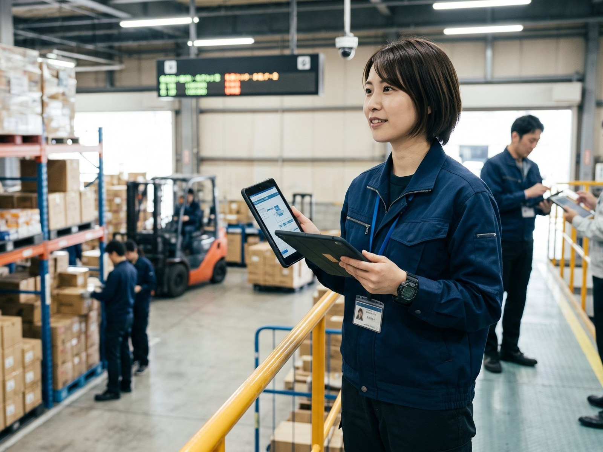
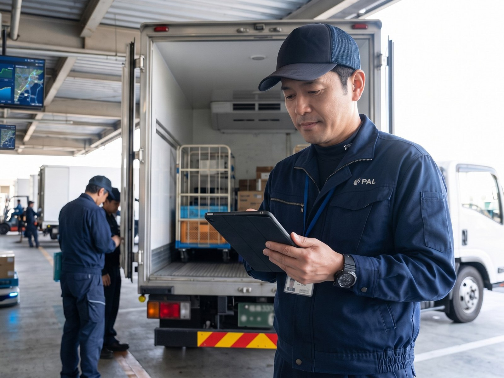

JOIN PAL
現場から、事業の仕組みまで。
次の変化をつくる仕事。
現場・技術・営業・輸送・コーポレート。さまざまな専門性を持つメンバーを募集しています。
※ 現在、各求人の応募先URLは準備中です。採用担当の承認後、ボタンから直接応募できるようになります。
外から提案するのではない。顧客の現場を請け負い、自分たちの責任で回す。技術と現場の両方に立つPALだからできる、"当事者"の仕事が、ここにある。

※画像はイメージです
Why PAL
PALは、物流現場の運営を自ら請け負いながら、システム・設備・データを組み合わせて現場で使われる仕組みをつくる会社です。提案して終わりではなく、実装・運用・改善まで関わります。
物流BPOとして現場運営そのものを請け負っています。
システム開発・自動化設備・データ活用を組み合わせます。
現場で動かし、運用と効果検証を続けます。
現場 × 技術 を両方知っているから、提案だけで終わらず、実装・運用・改善までを一気通貫で担えます。
Find Your Field
PALには9つの職種があります。それぞれ異なる専門性を持ち、必要な場面で連携しています。仕事の内容は「仕事を知る」ページでご覧いただけます。
 技術TECHNOLOGY
技術TECHNOLOGY
輸送TRANSPORT現場・技術・輸送。それぞれの専門性を持つ人が、同じ現場で仕事を進めています。
「募集中」は、募集職種ページに募集要項がある職種です。勤務地・応募条件は募集職種でご確認ください。
People / Real Voices
異なる専門性を持つ社員の、仕事への向き合い方。本人の言葉から、その一部をご紹介します。
下の見出しは、本人がインタビューで語った言葉です。
After Joining PALWork Life & Career
実際の仕事の1日から、経験を重ねた先のキャリアまで。
気になる職種から、PALで働く毎日を見てみませんか。
01
A Day in the Life
FAQ
選考の進み方、未経験からの応募、勤務地や働き方について、よくある質問にお答えしています。
JOIN PAL
現場・技術・営業・輸送・コーポレート。さまざまな専門性を持つメンバーを募集しています。
※ 現在、各求人の応募先URLは準備中です。採用担当の承認後、ボタンから直接応募できるようになります。